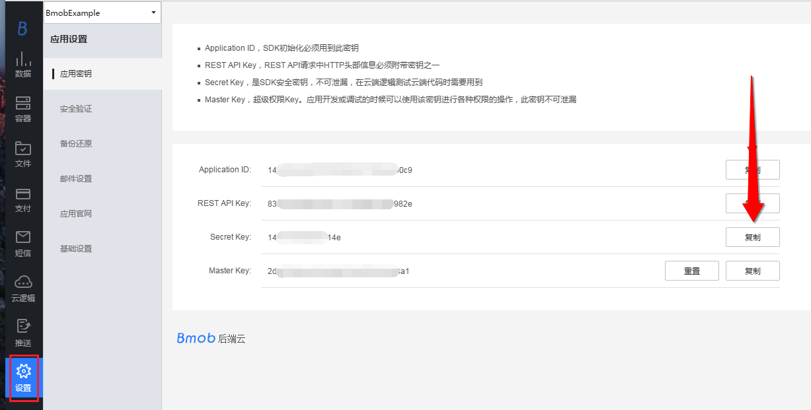
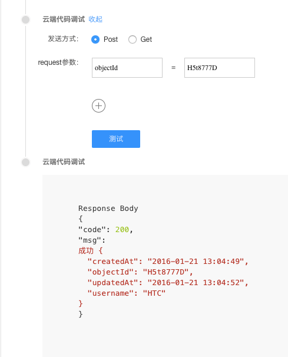

开发文档
在开发云函数时，希望大家能够先看看我们提供的编码规范文档：http://doc.bmobapp.com/cloud_function/web/norm/
调用云函数的方式¶
bmob允许以http的方式直接调用云函数。
获取Secret Key¶
用户需要以http的方式运行云函数，需要先确定应用的Secret Key。 调用云函数时，通过Secret Key标识一个应用，获取Secret Key的路径： 管理后台->应用密钥->Secret Key, 如下图所示：

注意：请妥善保管Secret Key，避免Secret Key的泄露！！！
以Get的方式调用云函数¶
下面展示了以Get的方式调用云函数：
curl -X GET http://cloud.bmobapp.com/0348d0c262bc91d9/test?name=jeff
其中： 0348d0c262bc91d9：应用的Secret Key。 test：云函数的名称 name=jeff: 传入一个参数，名称是name，值是jeff 与REST API不同，无需再传其它诸如app id等请求头。
以Post的方式调用云函数¶
下面展示了以Post的方式调用云函数：
curl -X POST \
-H "Content-Type: application/x-www-form-urlencoded" \
-d 'name=jeff' \
http://cloud.bmobapp.com/0348d0c262bc91d9/test
其中： 0348d0c262bc91d9：应用的Secret Key。 test：云函数的名称 name=jeff: 传入一个参数，名称是name，值是jeff 与REST API不同，无需再传其它诸如app id等请求头。
云函数模块解释¶
从云函数的入口方法function onRequest(request, response, modules)可知，云函数包含三个模块，分别是request模块、response模块和modules模块。
request模块¶
request模块用于获取传入的参数。由于现在调用云函数有两种方式（get和post），所以获取传入的参数的方式需要使用不同的方法。
注意，当通过android，ios等客户端sdk调用云函数，或者通过REST API api的方式调用云函数，都是采用post的方式。
get方式¶
用get方式调用云函数，例如：
curl -X GET http://cloud.bmobapp.com/0348d0c262bc91d9/test?name=jeff
可用下面的方法获取name的值：
request.query.name
post方式¶
用post方式调用云函数，例如：
curl -X POST \
-H "Content-Type: application/x-www-form-urlencoded" \
-d 'name=jeff' \
http://cloud.bmobapp.com/0348d0c262bc91d9/test
可用下面的方法获取name的值：
request.body.name
获取调用云函数的http方式¶
当云函数是用于某些平台的回调时，同一段云函数可能有时是采用get的方式调用，有时是采用post的方式调用, 可用下面的方法获取当前云函数是采用get还是post方式调用。
例子如下：
var httptype = request.method; //获取调用云函数的是post或者get方式
if ("GET" == httptype) {
//采用get方式调用云函数
}else{
//采用post方式调用云函数
}
response模块¶
response为云函数的信息回传模块，该模块包含了一个send方法，实现将云端的执行结果（如查询的数据）返回给SDK或者RestApi等调用端：
response.send(string result)
modules模块¶
modules是Bmob云函数提供给大家的各种对象处理的模块，包括数据库对象（oData）、文件对象（oFile）、地理位置对象（oLocation）、关联关系对象（oRelation）、原子操作对象（oAtom）、数据批量操作对象（oBatch）、数组对象（oArray）、消息推送对象（oPush）、云函数对象（oFunctions）、HTTP对象（oHttp）、字符编码转换对象（oEncodeing）、事件对象（oEvent）、bql对象（oBql）、html元素解析对象（oHtmlparser）、加密对象（oCrypto）。云函数想要调用这些对象时，只需要用如下的方法即可获取：
//获取数据库对象
var db = modules.oData;
//下面进行其他操作
** 这里需要说明一点的是：云函数对数据格式的封装遵循RestApi的规则，如果在查看过程中有什么疑问，请移步到RestApi开发文档。 **
数据库对象¶
数据库操作的简单实例如下：
function onRequest(request, response, modules) {
//获取数据库对象
var db = modules.oData;
//获取Posts表中的所有值
db.find({
"table":"Posts",
},function(err,data){
response.send(data);
});
}
其中，Posts是查找的数据表名称，table是关键词。
需要注意的是，Bmob云函数底层采用Nodejs进行开发，继承了Nodejs的异步非阻塞事件驱动模式，因此也不可避免的需要大量使用回调方法，这些方法往往以非显式声明的闭包形式存在。
此外，通过oData数据库对象获取返回的回调接口中，所有的data数据都是string类型，如果需要在云端中作为对象类型调用的话，需要将string类型转换为object类型，即：
var dataObject= JSON.parse(data);
oData对象的其他操作方法如下：
查询多条数据¶
find({
"table":"XXX", //表名
"keys":"a,b,c", //返回字段列表，多个字段用,分隔
"where":{"a":"XXXX","b":"XXXX"}, //查询条件是一个JSON object
//"where":{"c":{"$ne":1}}, //条件查询 查询c字段值不为1的记录
"order":"-a,b", //排序列表，[-]字段名称,-表示降序，默认为升序
"limit":10, //limit大小，一页返回多少条记录，默认为0
"skip":2, //skip,分页offset，(page-1)*limit
"count":1 //count,只返回符合条件的记录总数
},function(err,data){ //回调函数
});
以下是读取Games表（包含name字段）的数据，并对这些数据进行遍历，将name字段连接起来的一段代码样例：
function onRequest(request, response, modules) {
var db = modules.oData;
db.find({
"table":"Games"
},function(err,data){
//将返回结果转换为Json对象
var resultObject= JSON.parse(data);
//遍历这个Json对象
for(var results in resultObject)
{
var resultArr = resultObject[results];
var str =" ";
//遍历得到的每行结果
for(var oneline in resultArr){
str =str +" " + resultArr[oneline].name;
}
response.send(str);
}
});
}
查询单条数据¶
findOne({
"table":"XXX", //表名
"objectId":"XXXX" //记录的objectId
},function(err,data){ //回调函数
});
需要注意的是： 1. 为确保User表的安全性，findOne方法不能直接操作User表。 2. find方法返回的data是字符串类型，如果需要直接对象化调用的话，需要将string类型转换为object类型，即如下，从_User表中查找objectId=YIuNDDDO的数据，并把username信息显示出来：
function onRequest(request, response, modules) {
var db = modules.oData;
db.findOne({
"table":"_User",
"objectId":"YIuNDDDO"
},function(err,data){
var dataObject= JSON.parse(data);
response.send("获取用户名信息为： " + dataObject.username);
});
}
获取表的记录数¶
function onRequest(request, response, modules) {
var db = modules.oData;
//获取表"GameScore"的总记录数
db.find({
"table":"GameScore",
"limit":0,
"count":1
},function(err,data){
resultObject= JSON.parse(data);
count=resultObject.count;
response.send("表记录数:"+count);
});
}
其中，count为标识位，具体原因大家可以参考Restapi说明文档：http://doc.bmobapp.com/data/restful/develop_doc/#_30。
修改数据¶
update({
"table":"XXX", //表名
"objectId":"XXXX", //记录的objectId
"data":{"a":"XXXX","b":"XXXX"} //需要更新的数据，格式为JSON
},function(err,data){ //回调函数
});
以下是一个更新数据的示例代码，实现的效果是从Games表中找到objectId=hmw9888C的数据，将其name数据改为pingpang games。
function onRequest(request, response, modules) {
var db = modules.oData;
db.update({
"table":"Games",
"objectId":"hmw9888C",
"data":{"name":"pingpang games"}
},function(err,data){
response.send("success");
});
}
添加数据¶
insert({
"table":"XXX", //表名
"data":{"a":"XXXX","b":"XXXX"} //需要更新的数据，格式为JSON
},function(err,data){ //回调函数
});
删除数据¶
remove({
"table":"XXX", //表名
"objectId":"XXXX" //记录的objectId
},function(err,data){ //回调函数
});
删除某行某字段的数据¶
db.update({
'table': 'xxx',
'objectId': 'yyy',
'data': {
'zzz': { // zzz就是要删除的列名
'__op': 'Delete'
}
}
}, function(err, data) {
// DO ANYTHING
});
用户注册¶
userSignUp({
"data":{"a":"XXXX","b":"XXXX"} //用户注册的信息，格式为JSON
},function(err,data){ //回调函数
});
用户登录¶
userLogin({
"username":"aa", //登录用户名
"password":"" //用户密码
},function(err,data){ //回调函数
});
用户密码重置¶
userRestPassword({
"data":{"email":"XX@XX.com"} //需要重置密码的用户邮件账号
},function(err,data){ //回调函数
});
获取某一用户记录¶
getUserByObjectId({
"objectId":"XXXX" //记录的objectId
},function(err,data){ //回调函数
});
更新某一用户记录¶
说明：必须先登录才能更新，切记！！！否则会报sessionToken error
updateUserByObjectId({
"objectId":"XXXX", //记录的objectId
"data":{"a":"XXXX","b":"XXXX"} //需要更新的数据，格式为JSON
},function(err,data){ //回调函数
});
以下是更新用户信息的示例代码：
function onRequest(request, response, modules) {
var db = modules.oData;
db.userLogin({
"username":"123567",
"password":"123"
},function(err, data){
if(data){
var dataObject = JSON.parse(data);
if(dataObject.error == null){
//需要设置登录之后获取的sessionToken头信息
db.setHeader({"X-Bmob-Session-Token":dataObject.sessionToken});
db.updateUserByObjectId({"objectId":dataObject.objectId ,data:{"username":"123"}},function(err,data){
response.send("更新成功");
})
}else{
response.send("找不到该用户！");
}
}
});
}
获得所有用户信息¶
getAllUser(function(err,data){ //回调函数
});
删除某一个指定用户¶
说明：必须登录才行，切记！！！否则会报sessionToken error
removeUserByObjectId({
"objectId":"XXXX" //记录的objectId
},function(err,data){ //回调函数
});
邮箱验证¶
发送给用户的邮箱验证的邮件会在一周内失效，可以通过下面的方法来强制重新发送
requestEmailVerify({
"data":{"email":"coolguy@iloveapps.com"}
},function(err,data){
//回调函数
});
这里有一个小技巧分享给大家，有时候你会希望能够用Master Key（Bmob给大家提供的超级权限，可以对数据进行任何操作）对数据进行操作，包括不需要用户登录就可以修改用户信息等。那么你只需要在对数据进行操作前，通过db.setHeader方法设置下Master Key头信息即可，如下：
function onRequest(request, response, modules) {
var db = modules.oData;
db.setHeader({"X-Bmob-Master-Key":"这里填写Master Key信息"});
db.updateUserByObjectId({"objectId":"这里是需要更新的用户ObjectId信息" ,data:{"username":"123"}},function(err,data){
response.send("更新成功");
});
}
文件对象¶
云函数只支持文件的删除操作。删除文件，必须要知道文件的url，示例代码如下：
function onRequest(request, response, modules) {
var file = modules.oFile;
//文件的路径为 http://bmob-cdn-10.b0.upaiyun.com/2017/06/03/8989824440d8c3a680865e4086fcab62.jpg
file.del({
"url":"2017/06/03/8989824440d8c3a680865e4086fcab62.jpg" //截取有效路径
},function(err,data){
//回调函数
});
}
其中，2017/06/03/8989824440d8c3a680865e4086fcab62.jpg 为文件完整路径的"http://bmob-cdn-10.b0.upaiyun.com/2017/06/03/8989824440d8c3a680865e4086fcab62.jpg"的有效url。
返回结果是个json对象：
{
"msg": "ok"
}
云函数对象¶
在云函数中可以调用本app的其它云函数，示例代码如下：
function onRequest(request, response, modules) {
var functions = modules.oFunctions;
functions.run({
"name": "test",
"data":{"content":"你好","address":"guangzhou"}
},function(err,data){
//回调函数
});
}
在上面的例子中，name是云函数的函数名，data中是传递的参数
如果不需要传递任何参数，可以用下面的实例代码：
function onRequest(request, response, modules) {
var functions = modules.oFunctions;
functions.run({
"name": "test"
},function(err,data){
//回调函数
});
}
地理位置对象¶
Bmob允许用户根据地球的经度和纬度坐标进行基于地理位置的信息查询。你可以在查询中添加一个GeoPoint的对象查询。您可以实现轻松查找出离当前用户最接近的信息或地点的功能。
创建地理位置¶
创建地理位置的示例代码如下：
function onRequest(request, response, modules) {
var location = modules.oLocation;
location.create({
"table":"GameScore",
"objectId":"j4w2DDDT",
"data":{"location":{
"__type": "GeoPoint",
"latitude": 12.934755,
"longitude": 24.52065
}}
},function(err,data){
//回调函数
});
}
查询地理位置¶
现在您有一系列的对象对应的地理坐标，如果能发现那些对象离指定的点近就好了，这可以通过GeoPoint数据类型加上在查询中使用$nearSphere做到。获取离用户最近的10个地点的实现代码如下：
location.query({
"table":"GameScore",
"limit":10,
"where":{
"location": {
"$nearSphere": {
"__type": "GeoPoint",
"latitude": 30.0,
"longitude": 20.0
}
}
}
},function(err,data){
//回调函数
});
这会按离纬度30.0，经度-20.0的距离排序返回一系列的结果，第一个就是最近的对象。(注意如果一个特定的order参数给了的话，它会覆盖按距离排序)，例如，下面是两个上面的查询返回的结果：
{
"results": [
{
"location": {
"__type": "GeoPoint",
"latitude": 40.0,
"longitude": -30.0
},
"updatedAt": "2011-12-06 22:36:04",
"createdAt": "2011-12-06 22:36:04",
"objectId": "e1kXT22L"
},
{
"location": {
"__type": "GeoPoint",
"latitude": 30.0,
"longitude": 20.0
},
"updatedAt": "2011-12-06 22:36:26",
"createdAt": "2011-12-06 22:36:26",
"objectId": "51e3a2a8e4b015ead4d95dd9"
}
]
}
为了限定搜素的最大举例，需要加入$maxDistanceInMiles和$maxDistanceInKilometers或者$maxDistanceInRadians参数来限定。如果不加，则默认是100KM的半径。如，要找半径在10公里内的数据的实现代码如下：
location.query({
"table":"GameScore",
"limit":10,
"where":{
"location": {
"$nearSphere": {
"__type": "GeoPoint",
"latitude": 30.0,
"longitude": 20.0
},
"$maxDistanceInKilometers": 10.0
}
}
},function(err,data){
//回调函数
});
同样做查询寻找在一个特定的范围里面的对象也是可以的，为了找到在一个矩形的区域里的对象，按下面的格式加入一个约束 {"$within": {"$box": {[southwestGeoPoint, northeastGeoPoint]}}}，下面是一段示例代码：
location.query({
"table":"GameScore",
"limit":10,
"where":{
"location": {
"$within": {
"$box": [
{
"__type": "GeoPoint",
"latitude": 37.71,
"longitude": 22.53
},
{
"__type": "GeoPoint",
"latitude": 30.82,
"longitude": 22.37
}
]
}
}
}
},function(err,data){
//回调函数
});
关联关系对象¶
一个对象可以与其他对象相联系。就像数据库中的主外键关系一样，数据表 A 的某一个字段是数据表 B 的外键，只有表 B 中存在的数据才可插入进表 A 中的字段。
添加关联关系¶
为了更新 Pointer 的Key类型，Bmob提供特殊的操作来原子化地添加和删除一个指针，我们可以像这样添加一行记录时并添加一个指针：
function onRequest(request, response, modules) {
var rel = modules.oRelation;
rel.add({
"table":"GameScore",
"data":{"game":{"__type":"Pointer","className":"Game","objectId":"ekZq111a"}}
},function(err,data){
//回调函数
});
}
为了更新 Relation 的Key类型，Bmob提供特殊的操作来原子化地添加和删除一个或多个关系，我们可以像这样添加一行记录时并添加多个关系:
rel.add({
"table":"GameScore",
"data":{"gamerel":{"__op":"AddRelation","objects":[{"__type":"Pointer","className":"Game","objectId":"ekZq111a"},{"__type":"Pointer","className":"Game","objectId":"80SLHHHj"}]}}
},function(err,data){
//回调函数
});
修改关联对象¶
为了更新 Pointer 的Key类型，Bmob提供特殊的操作来原子化地添加和删除一个指针，我们可以像这样添加一个指针:
rel.update({
"table":"GameScore",
"objectId":"8106dc7c9e",
"data":{"game":{"__type":"Pointer","className":"Game","objectId":"80SLHHHj"}}
},function(err,data){
//回调函数
});
为了更新 Relation 的Key类型，Bmob提供特殊的操作来原子化地添加和删除一个或多个关系，我们可以像这样添加多个关系:
rel.update({
"table":"GameScore",
"objectId":"8106dc7c9e",
"data":{"gamerel":{"__op":"AddRelation","objects":[{"__type":"Pointer","className":"Game","objectId":"ekZq111a"}]}}
},function(err,data){
//回调函数
});
查询关联对象¶
有几种方式来对关系 Relation 或 指针 Pointer 类型数据进行查询, 如果您将要获取对象中有个Key类型是关系 Relation 或 指针 Pointer，这都说明你要获取的对象是匹配到另一个特殊（关联或指向）的对象的, 您可以用一个 where 参数查询, 自己使用 __type 构造一个 Pointer, 就像你构造其他数据类型一样。举例说, 如果每一条评论(Comment对象)有一个Key叫post，类型是Pointer，并且指向了一个具体的帖子(Post对象，用objectId表示一个帖子)，那么您可以使用下面的请求获取一个帖子的所有评论:
rel.query({
"table":"Comment",
"where":{"post":{"__type":"Pointer","className":"Post","objectId":"l4fQ999O"}},
},function(err,data){
//回调函数
});
如果您想要获取对象, 这些对象的一个字段指向的对象是符合另一个查询的, 您可以使用 $inQuery 操作符，注意默认的 limit 是 100 而且最大的 limit 是 1000，这个限制同样适用于内部的查询, 所以对于较大的数据集您可能需要细心地构建查询来获得期望的行为。举例说, 假设您有一个 帖子(Post)类和一个评论(Comment)类, 每个评论(Comment)都有一个指向它的帖子(Post)的关系Key名为post，并且类型为Pointer, 您可以找到所有有图片的帖子(Post)的评论(Comment):
rel.query({
"table":"Comment",
"where":{"post":{"$inQuery":{"where":{"image":{"$exists":true}},"className":"Post"}}},
},function(err,data){
//回调函数
});
同理，使用下面的请求，您可以找到所有没有图片的帖子(Post)的评论(Comment):
rel.query({
"table":"Comment",
"where":{"post":{"$notInQuery":{"where":{"image":{"$exists":true}},"className":"Post"}}},
},function(err,data){
//回调函数
});
如果您想获取的对象，是其父对象的关系 Relation 类型的Key的所有成员的话, 您可以使用 $relatedTo 操作符, 假设您有一个帖子(Post)类和一个系统默认的用户(_User)类, 而每一个帖子(Post)都可以被不同的用户(_User)所喜欢。 如果帖子(Post)类下面有一个Key名为likes，且是 Relation 类型, 存储了喜欢这个帖子(Post)的用户(_User)。那么您可以找到喜欢过同一个指定的帖子(Post)的所有用户：
rel.query({
"table":"users",
"where":{"$relatedTo":{"object":{"__type":"Pointer","className":"Post","objectId":"l4fQ999O"},"key":"likes"}},
},function(err,data){
//回调函数
});
还可以使用组合查询，比如下面这样，判断用户是否喜欢(likes)过这个帖子：
rel.query({
"table":"Comment",
"where":{"likes":{"$inQuery":{"where":{"objectId":"l3xRGGGa"},"className":"_User"}}, "objectId":"l4fQ999O"},
"limit":10,
"count":true
},function(err,data){
//回调函数
});
返回结果集如下：
{
count: 1
results: [ ]
}
你可以做如下判断，如果count=1，表明用户喜欢的这个帖子objectId存在，即用户喜欢过这个帖子；若count=0, 表明用户没有喜欢过这个帖子。
在某些情况之下，您可能需要在一个查询之中返回关联对象的多种类型，您可以通过传入字段名称到include参数中，多个字段名称用,间隔， 比如，我们想获得最近的10篇评论，而您想同时得到它们相关的post：
include的Key必须是Pointer类型
rel.query({
"table":"Comment",
"order":"-createdAt",
"limit":10,
"include":"post"
},function(err,data){
//回调函数
});
不是作为一个 Pointer 类型表示，post字段现在已经被展开为一个完整的帖子(Post)对象， __type 被设置为 Object 而 className 同样也被提供了。 举例说， 一个指向帖子(Post)的Pointer原本展示为：
{
"__type": "Pointer",
"className": "Post",
"objectId": "51e3a359e4b015ead4d95ddc"
}
当一个查询使用include参数来包含进去来取代 Pointer 之后，可以看到 Pointer 被展开为：
{
"__type": "Object",
"className": "Post",
"objectId": "51e3a359e4b015ead4d95ddc",
"createdAt": "2011-12-06T20:59:34.428Z",
"updatedAt": "2011-12-06T20:59:34.428Z",
"otherFields": "willAlsoBeIncluded"
}
您可以同样做多层的include, 这时要使用 "." 号. 如果您要include一条评论(Comment)对应的帖子(Post)的作者(author)：
include的Key必须是Pointer类型
rel.query({
"table":"Comment",
"order":"-createdAt",
"limit":10,
"include":"post.author"
},function(err,data){
//回调函数
});
删除关联关系¶
可以在一个对象中删除一个关系:
rel.delete({
"table":"GameScore",
"objectId":"8106dc7c9e",
"data":{"gamerel":{"__op":"RemoveRelation","objects":[{"__type":"Pointer","className":"Game","objectId":"ekZq111a"}]}}
},function(err,data){
//回调函数
});
原子操作对象¶
很多应用可能会有需要计数器的功能，比如某条信息被点赞多少次等。Bmob提供了非常便捷的方式来保证原子性的修改某一数值字段的值，示例代码如下：
function onRequest(request, response, modules) {
//获取原子操作对象
var atom = modules.oAtom;
//score增加一个固定值操作
atom.exec({
"table":"GameScore",
"objectId":"j4w2DDDT",
"data":{"score":{"__op":"Increment","amount":1}}
},function(err,data){
//回调函数
});
}
function onRequest(request, response, modules) {
//获取原子操作对象
var atom = modules.oAtom;
//score减少一个固定值操作
atom.exec({
"table":"GameScore",
"objectId":"j4w2DDDT",
"data":{"score":{"__op":"Increment","amount":-1}}
},function(err,data){
//回调函数
});
}
批量操作对象¶
为了减少因为网络通讯次数太多而带来的时间浪费, 您使用使用下面的批量(batch)操作，在一个请求中对多个普通对象(不支持系统内置的用户对象)进行添加(create)、更新(update)、删除(delete) 操作，上限为50个。
function onRequest(request, response, modules) {
//获取数组对象
var bat = modules.oBatch;
//批量操作
bat.exec({
"data":{
"requests": [
{
"method": "POST",
"path": "/1/classes/GameScore",
"body": {
"score": 1337,
"playerName": "Sean Plott"
}
},
{
"method": "POST",
"path": "/1/classes/GameScore",
"body": {
"score": 1338,
"playerName": "ZeroCool"
}
}
]
}
},function(err,data){
//回调函数
});
}
批量操作的响应会是一个列表, 列表的返回值个数同给定的requests请求个数是相等的。列表中每个返回项都有一个字段是 "success" 或者 "error"， "success" 的值是通常是和你进行其他REST操作成功时返回的值是一样的:
{
"success": {
"createdAt": "2012-06-15T16:59:11.276Z",
"objectId": "51c3ba67e4b0f0e851c16221"
}
}
"error" 的值是有返回码和错误信息字符串的一个对象:
{
"error": {
"code": 101,
"error": "object not found for delete"
}
}
在 batch 操作中更新(update)和删除(delete)同样是有效的:
function onRequest(request, response, modules) {
//获取数组对象
var bat = modules.oBatch;
//批量操作
bat.exec({
"data":{
"requests": [
{
"method": "PUT",
"path": "/1/classes/GameScore/51e3a334e4b0b3eb44adbe1a",
"body": {
"score": 999999
}
},
{
"method": "DELETE",
"path": "/1/classes/GameScore/51a8a4d9e4b0d034f6159a35"
}
]
}
},function(err,data){
//回调函数
});
}
数组操作对象¶
用下面的方法来获取数组对象：
var arr = modules.oArray;
添加数组对象¶
添加数组对象,不管元素是否存在都添加的实现代码如下：
arr.add({
"table":"GameScore",
"data":{"skills":{"__op":"Add","objects":["flying","kungfu"]}}
},function(err,data){
//回调函数
});
添加数组对象,只有在元素不存在情况下才添加的实现代码如下：
//往GameScore表中字段skills添加的数组
arr.addUnique({
"table":"GameScore",
"objectId":"j4w2DDDT",
"data":{"skills":{"__op":"AddUnique","objects":["flying","kungfu"]}}
},function(err,data){
//回调函数
});
删除数组对象¶
//往GameScore表中字段skills删除数组
arr.remove({
"table":"GameScore",
"objectId":"j4w2DDDT",
"data":{"skills":{"__op":"Remove","objects":["flying","kungfu"]}}
},function(err,data){
//回调函数
});
查询数组对象¶
查询数组对象,可以查找skills的数组值中包含有"flying"的对象的实现方法如下:
//往GameScore表中字段skills添加的数组
arr.query({
"table":"GameScore",
"where":{"skills":"flying"}
},function(err,data){
//回调函数
});
查询数组对象,可以查找skills的数组值中包含有"flying","kungfu"的对象的实现方法如下：
//往GameScore表中字段skills添加的数组
arr.query({
"table":"GameScore",
"where":{"skills":{"$all":["flying","kungfu"]}}
},function(err,data){
//回调函数
});
Redis 操作对象¶
基于 Bmob 云函数的 Redis 模块 - Promise then 方式
初始化 Redis 实例¶
所有操作前需要先初始化 Redis 实例：
const redis = modules.oRedis;
操作文档¶
字符串 (String) 操作¶
set(key, value, [expireSeconds])¶
设置键值对，可设置过期时间
// 设置普通键值
redis.set('username', 'JohnDoe')
.then(function(reply) {
console.log('设置成功:', reply); // 'OK'
});
// 设置带过期时间的键值（30秒）
redis.set('session_token', 'abc123xyz', 30)
.then(function(reply) {
console.log('带过期时间的设置成功');
});
get(key)¶
获取键对应的值
redis.get('username')
.then(function(value) {
if (value === null) {
console.log('键不存在');
} else {
console.log('用户名:', value); // 'JohnDoe'
}
})
.catch(function(error) {
console.error('获取失败:', error);
});
哈希 (Hash) 操作¶
hset(key, field, value)¶
设置哈希字段的值
redis.hset('user:1000', 'email', 'user@example.com')
.then(function(result) {
console.log('字段设置:', result ? '成功' : '失败');
});
hget(key, field)¶
获取哈希字段的值
redis.hget('user:1000', 'email')
.then(function(value) {
console.log('用户邮箱:', value);
});
hgetall(key)¶
获取哈希的所有字段和值
redis.hgetall('user:1000')
.then(function(userData) {
if (userData) {
console.log('用户数据:', userData);
// 输出: { email: 'user@example.com', name: 'John' }
} else {
console.log('用户数据不存在');
}
});
列表 (List) 操作¶
lpush(key, ...values)¶
从列表左侧插入元素
redis.lpush('tasks', 'task1', 'task2', 'task3')
.then(function(length) {
console.log('当前列表长度:', length);
});
rpush(key, ...values)¶
从列表右侧插入元素
redis.rpush('messages', 'msg1', 'msg2')
.then(function(length) {
console.log('新增消息后长度:', length);
});
lrange(key, start, stop)¶
获取列表指定范围的元素
// 获取所有元素 (0 到 -1)
redis.lrange('tasks', 0, -1)
.then(function(tasks) {
console.log('所有任务:', tasks);
});
// 获取前5个元素
redis.lrange('messages', 0, 4)
.then(function(recentMessages) {
console.log('最近5条消息:', recentMessages);
});
lpop(key)¶
从列表左侧弹出一个元素
redis.lpop('tasks')
.then(function(value) {
if (value === null) {
console.log('列表为空');
} else {
console.log('弹出的元素:', value);
}
})
.catch(function(error) {
console.error('弹出失败:', error);
});
rpop(key)¶
从列表右侧弹出一个元素
redis.rpop('messages')
.then(function(value) {
if (value === null) {
console.log('列表为空');
} else {
console.log('弹出的元素:', value);
}
})
.catch(function(error) {
console.error('弹出失败:', error);
});
集合 (Set) 操作¶
sadd(key, ...members)¶
向集合添加元素
redis.sadd('user:1000:tags', 'VIP', 'Premium', 'NewUser')
.then(function(count) {
console.log('成功添加标签数:', count);
});
smembers(key)¶
获取集合的所有元素
redis.smembers('user:1000:tags')
.then(function(tags) {
console.log('用户标签:', tags);
// 输出: ['VIP', 'Premium', 'NewUser']
});
spop(key, [count])¶
从集合中随机弹出一个或多个元素
// 弹出一个元素
redis.spop('user:1000:tags')
.then(function(value) {
if (value === null) {
console.log('集合为空');
} else {
console.log('弹出的元素:', value);
}
})
.catch(function(error) {
console.error('弹出失败:', error);
});
// 弹出多个元素
redis.spop('user:1000:tags', 2)
.then(function(values) {
if (values.length === 0) {
console.log('集合为空');
} else {
console.log('弹出的元素:', values);
}
})
.catch(function(error) {
console.error('弹出失败:', error);
});
通用操作¶
del(key)¶
删除一个或多个键
redis.del('temp_data')
.then(function(count) {
console.log('删除键数量:', count);
});
exists(key)¶
检查键是否存在
redis.exists('user:1000')
.then(function(exists) {
if (exists) {
console.log('用户数据存在');
} else {
console.log('用户数据不存在');
}
});
expire(key, seconds)¶
设置键的过期时间
redis.expire('session:abc', 3600) // 1小时过期
.then(function(success) {
if (success) {
console.log('过期时间设置成功');
} else {
console.log('键不存在，设置失败');
}
});
quit()¶
关闭 Redis 连接
redis.quit()
.then(function() {
console.log('Redis连接已关闭');
});
最佳实践提示¶
- 所有 Redis 操作都返回 Promise，使用
.then()处理成功结果，.catch()处理错误 - 在云函数中，不需要每次操作后都关闭连接（这个待验证）
- 键命名使用冒号分隔的命名空间，如
user:1000:profile - 存储对象时使用
JSON.stringify()，获取后使用JSON.parse() - 数值类型需要手动转换：
parseInt()或parseFloat() - 处理空值时：
redis.get()返回null表示键不存在
HTTP请求对象¶
oHttp对象可以模拟实现get、post、put、delete等各种HTTP请求信息，让你在云端实现诸如数据采集、OAuth授权登录等功能。Bmob的HTTP请求模块采用Nodejs提供的request模块，这里提供简单的Get和Post的操作实例。更多的功能详细参考：https://npmjs.org/package/request
/**
*发起Get请求
*/
const http = modules.oHttp; // HTTP 请求模块
// 定义请求选项
const options = {
method: 'GET',
url: 'https://api.example.com/data', // 示例API地址
headers: {
'Authorization': 'Bearer YOUR_ACCESS_TOKEN', // 授权令牌
'Content-Type': 'application/json' // 指定JSON格式
}
};
// 发起GET请求
http.get(options, function (error, res, body) {
if (error) {
response.send(error);
}
response.send(body);
});
-
/**
*发起Post请求
*/
//获取Http模块
var http = modules.oHttp;
var options = {
"url": 'https://自己备案域名/1/classes/GameScore',
"headers": {
'X-Bmob-Application-Id': 'Your Application ID',
'X-Bmob-REST-API-Key': 'Your REST API Key',
'Content-Type': 'application/json'
},
"body":JSON.stringify({"score":1337,"playerName":"Sean Plott"})
};
http.post(options, function(error, res, body) {
response.send(body);
});
异步对象Async/Await¶
Async/Await 很方便解决nodejs异步网络请求问题，下面是引入对象，如需更多了解，可以查阅Nodejs官方文档
// 多个函数从上到下依次执行,相互之间没有数据交互
function onRequest(request, response, modules) {
var async = require('async');
var task1 =function(callback){
console.log("task1");
callback(null,"task1")
}
var task2 =function(callback){
console.log("task2");
callback(null,"task2")
}
var task3 =function(callback){
console.log("task3");
callback(null,"task3")
}
async.series([task1,task2,task3],function(err,result){
console.log("series");
if (err) {
response.send(err);
}
response.send(result);
})
}
事件对象¶
oEvent，也就是eventproxy模块，解决异步回调的问题。
更多的功能详细参考：https://github.com/JacksonTian/eventproxy
function onRequest(request, response, modules) {
var ep = modules.oEvent; //eventproxy模块，解决异步回调的问题
ep.after('got_file', 3, function (list) {
response.send("len:"+list.length);
});
//发送3次事件后触发事件，输出list的长度
ep.emit("got_file", "1");
ep.emit("got_file", "1");
ep.emit("got_file", "1");
}
Encode编码转换对象¶
Encode对象可以实现字符编码的转换。更多的功能详细参考：https://www.npmjs.org/package/encoding
Encode对象就一个方法convert()，使用方法为：encoding.convert(text, toCharset, fromCharset)。
text: 需要转换的对象，可以为Buffer或者String对象。
toCharset: 转换后的编码。
fromCharset: 转换前的编码，缺省为uft8。
转换后的输入结果为Buffer对象。
var encoding = modules.oEncodeing;
var result = encoding.convert("禅","gbk","utf8");
response.send(result.toString());
html元素解析对象（oHtmlparser）¶
html元素解析对象可以实现html的解释。更多的功能详细参考：https://www.npmjs.org/package/htmlparser
代码例子
function onRequest(request, response, modules) {
var htmlparser = modules.oHtmlparser;
var rawHtml = "<a href='test.html'>xxx</a>";
var handler = new htmlparser.DefaultHandler(function (error, dom) {});
var parser = new htmlparser.Parser(handler);
parser.parseComplete(rawHtml);
response.send(JSON.stringify(handler.dom, null, 2));
}
代码的输出：
[
{
"raw": "a href='test.html'",
"data": "a href='test.html'",
"type": "tag",
"name": "a",
"attribs": {
"href": "test.html"
},
"children": [
{
"raw": "xxx",
"data": "xxx",
"type": "text"
}
]
}
]
bql对象（oBql）¶
我们提供类 SQL 语法的 BQL 查询语言来查询数据
下面的代码例子就是查询GameScore表的所有数据
function onRequest(request, response, modules) {
//获得bql的对象
var Bql = modules.oBql;
Bql.exec({
"bql":"select * from GameScore"
},function(err,data){
response.send(data);
});
}
BQL 还支持占位符查询，where 和 limit 子句的条件参数可以使用问号替换，然后通过 values 数组传入：
function onRequest(request, response, modules) {
//获得bql的对象
var Bql = modules.oBql;
Bql.exec({
"bql":"select * from GameScore where name=? limit ?,? ",
"values":"[\"tom\",0,100]"
},function(err,data){
response.send(data);
//回调函数
});
}
更多请参考 BQL 详细指南 。
加密对象（oCrypto）¶
提供md5和sha1两种加密算法。更多的功能详细参考：https://www.npmjs.org/package/crypto
代码例子
function onRequest(request, response, modules) {
var crypto = modules.oCrypto;
var md5 = crypto.createHash('md5');
md5.update("hello"); //输入要md5的内容
response.send(md5.digest('hex'));//以16进制编码
}
新加密对象oCryptoJS¶
Gzip
function onRequest(request, response, modules) {
var gzip = modules.oGzip;
gzip.gzip('Hello World').then((compressed) =>{
return gzip.ungzip(compressed);
}).then((decompressed) =>{
response.end(decompressed.toString());
});
}
RSA 非对称加密
//RSA
function onRequest(request, response, modules) {
var NodeRSA = modules.oCryptoRSA;
var key = new NodeRSA({b: 512}); //生成新的512位长度密钥
var text = 'Hello RSA!'; // 加密前数据
var encrypted = key.encrypt(text, 'base64'); // 加密后数据
console.log('encrypted: ', encrypted);
var decrypted = key.decrypt(encrypted, 'utf8'); // 解密后数据
console.log('decrypted: ', decrypted);
response.end(encrypted)
}
AES 加密
// AES
function onRequest(request, response, modules) {
var CryptoJS = modules.oCryptoJS;
let key = CryptoJS.enc.Utf8.parse('wAqH3oMU*aW4MYUJ'); //密钥必须是16位，且避免使用保留字符
let encryptedData = CryptoJS.AES.encrypt("hello", key, {
mode: CryptoJS.mode.ECB,
padding: CryptoJS.pad.Pkcs7
});
let hexData = encryptedData.ciphertext.toString();
console.log(hexData)
// response.end(hexData)
//================解密================
let encryptedHexStr = CryptoJS.enc.Hex.parse(hexData);
let encryptedBase64Str = CryptoJS.enc.Base64.stringify(encryptedHexStr);
let decryptedData = CryptoJS.AES.decrypt(encryptedBase64Str, key, {
mode: CryptoJS.mode.ECB,
padding: CryptoJS.pad.Pkcs7
});
let text = decryptedData.toString(CryptoJS.enc.Utf8);
console.log("text",text)
response.end(text)
}
时间格式化类¶
获取当前时间，格式化为 2022-11-18 14:36:03 。
function onRequest(request, response, modules) {
let moment = modules.oMoment
let time = moment().format('YYYY-MM-DD HH:mm:ss');
response.end(time)
}
格式化示例¶
moment().format('MMMM Do YYYY, h:mm:ss a'); // 十月 18日 2021, 2:38:27 下午
moment().format('dddd'); // 星期一
moment().format("MMM Do YY"); // 10月 18日 21
moment().format('YYYY [escaped] YYYY'); // 2021 escaped 2021
moment().format(); // 2021-10-18T14:38:27+08:00
相对时间¶
moment("20111031", "YYYYMMDD").fromNow(); // 10 年前
moment("20120620", "YYYYMMDD").fromNow(); // 9 年前
moment().startOf('day').fromNow(); // 15 小时前
moment().endOf('day').fromNow(); // 9 小时内
moment().startOf('hour').fromNow(); // 39 分钟前
// undefined
日历时间¶
moment().subtract(10, 'days').calendar(); // 2021/10/08
moment().subtract(6, 'days').calendar(); // 上星期二14:38
moment().subtract(3, 'days').calendar(); // 上星期五14:38
moment().subtract(1, 'days').calendar(); // 昨天14:38
moment().calendar(); // 今天14:38
moment().add(1, 'days').calendar(); // 明天14:38
moment().add(3, 'days').calendar(); // 下星期四14:38
moment().add(10, 'days').calendar(); // 2021/10/28
// undefined
云函数调试工具¶
-
网页在线调试工具¶
为方便开发者调试云函数，Bmob为开发者提供了便捷的云端调试工具，你可以直接在云函数的编辑页面下对编写的代码进行调试，如实现从Bar表中查找指定objectId号（SDK中上传参数）的数据，你可以在云函数中实现如下：
function onRequest(request, response, modules) {
var db = modules.oData;
db.findOne({
"table":"Bar",
"objectId":request.body.objectId
},function(err,data){ //回调函数
response.send("成功 " + data);
});
}
调试时，你在云端调试工具中输入参数名为objectId，参数值为你想要查询的信息，如下图，即可查看到调试结果。

-
命令调试工具 Bmobup¶
有时我们开发的云函数，可能上百行代码，在网页不太方便，这时我们可以使用自己习惯的开发工具来编写代码，通过Bmobup命令来调试上传，Bmob平台Node、Java云函数本地开发调试工具,增加云函数开发效率，支持Mac,Windows,liunx系统 。它的流程会把你本地写的代码，提交到Bmob应用云函数并返回结果。
项目地址：
https://github.com/bmob/bmobup
错误对象¶
Bmob提供的官方模块（非第三方）的错误回调中都会有一个err对象，这个err对象包含两个属性：error和code，分别代表错误异常信息和错误代码。调用时可以简单如下使用：
function onRequest(request, response, modules) {
var db = modules.oData;
db.findOne({
"table":"YourTableName",
"objectId":request.body.oid
},function(err,data){
//对返回结果进行处理
if(err) response.send("error is " + err.code + "error message is " + err.error );
else response.send(data);
});
}
日志对象¶
** 这个功能已暂时停用 **
oLog 是一个日志对象，当程序调试时，可以把对应变量的值写入日志表。
function onRequest(request, response, modules) {
var oLog = modules.oLog;
oLog.log("Bmob你好，这是一条日志")
}
代码执行后，会在应用生成一个表，名称oLog，点击即可查看日志